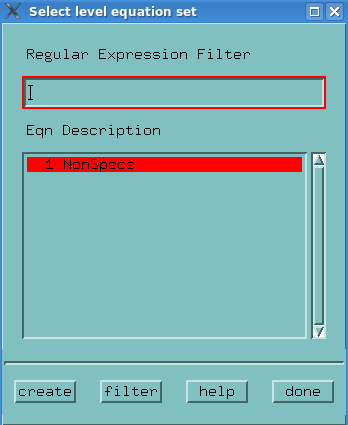

Creating new specification sets
This topic describes how to create a specification set using the Spec Tool.
Before you begin
For level setup: You need at least one equation set that you can associate with the specification set.
For timing setup: You need at least one equation set and one wavetable that you can associate with the specification set.
If you do not have any existing equation set you may create one during the procedure.
Procedure
- Open the Spec Tool.
- On the menu, click .
The Select <level/timing> equation set window opens.
The window lists all currently defined equation sets and, for timing setup, wavetables.

If you do not have any existing specification sets you must create one.
Note For level setup: You must associate an equation set to the specification. For timing setup: You must associate a wavetable and an equation set to the specification. - Highlight your desired equation set and wavetable, and click create.
The Create timing spec set window opens.
The window lists all unused numbers (1 to 99) for the specification sets.

- Highlight a number and, if necessary, type a description for your specification in the
Description filed.
The description is to help you. It might typically be a reference to the speed use in the specification settings; 40MHz std, for example.
Note The description must not contain a semicolon. - Repeat these steps until all specification sets have been defined
- In the Create new specification window click done.
Examples
Example 1 (without using variables)
- In the Level Setup tool, select the menu item .
Alternatively you can go <93000> <Setup> <Spec Tool>.
If the Select specification window opens:
In the window click done.
You access The Spec Tool window.
- On the menu, click .
- Click the equation set 1 NonSpecs in the Eqn Description area.
- Click create.
The Create level spec set window opens.
- Select "1" in the Unused Numbers area.
The line of the selected number will be highlighted in red.
- In the Description field, enter nospecs.
- Click Create.
- In the Select level equation set window, click done.
In the Levels line, the Spec Tool shows the message "modified, download required".
- Click Download(the Down arrow icon in the Spec Tool).
Since the specification "nospecs" has no values, no further action is required.
This level specset is now ready to use in SmarTest.
- In the Test Program Explorer save the levels file.
Example 1 (using a variable)
- From the Level Setup window select . This opens the Spec Tool.
- In the SpecTool, select .
- Select the Equation Set 2 specs.
- Click create.
You now see a window with the heading Create level spec set.
- Select 1.
You are defining a specification that points to spec set 1.
- In the Description field, enter Vcc = 4.5V.
- Click create.
- Click done in the Select level equation set window.
You see the variable names for this spec set in the SpecTool Name column.
- Repeat the procedure for all spec variables accordingly.
After you have defined the specifications:
- Click the Download icon (the down arrow in the SpecTool) and check the Report window for errors.
- In the Test Program Explorer right-click the level file and Save.
Functional changes
- Introduced before SmarTest 6.3.2